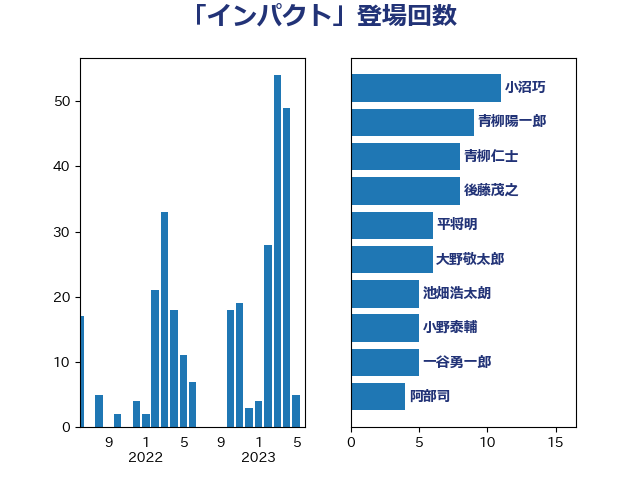

単語「インパクト」

| 小沼巧 | 立憲民主党 | 11 回 |
| 青柳陽一郎 | 立憲民主党 | 9 回 |
| 青柳仁士 | 日本維新の会 | 8 回 |
| 後藤茂之 | 自由民主党 | 8 回 |
| 平将明 | 自由民主党 | 6 回 |
| 大野敬太郎 | 自由民主党 | 6 回 |
| 池畑浩太朗 | 日本維新の会 | 5 回 |
| 小野泰輔 | 日本維新の会 | 5 回 |
| 一谷勇一郎 | 日本維新の会 | 5 回 |
| 阿部司 | 日本維新の会 | 4 回 |
| 福岡資麿 | 自由民主党 | 4 回 |
| 沢田良 | 日本維新の会 | 4 回 |
| 杉本和巳 | 日本維新の会 | 4 回 |
| 音喜多駿 | 日本維新の会 | 3 回 |
| 赤木正幸 | 日本維新の会 | 3 回 |
| 田村智子 | 日本共産党 | 3 回 |
| 森本真治 | 立憲民主党 | 3 回 |
| 柳ヶ瀬裕文 | 日本維新の会 | 3 回 |
| 松原仁 | 立憲民主党 | 3 回 |
| 本村伸子 | 日本共産党 | 3 回 |
| 山口壯 | 自由民主党 | 3 回 |
| 大塚耕平 | 国民民主党 | 3 回 |
| 中谷一馬 | 立憲民主党 | 3 回 |
| 藤巻健太 | 日本維新の会 | 2 回 |
| 荒井優 | 立憲民主党 | 2 回 |
| 笠井亮 | 日本共産党 | 2 回 |
| 竹内真二 | 公明党 | 2 回 |
| 稲富修二 | 立憲民主党 | 2 回 |
| 石川香織 | 立憲民主党 | 2 回 |
| 浜口誠 | 国民民主党 | 2 回 |
| 河西宏一 | 公明党 | 2 回 |
| 森屋隆 | 立憲民主党 | 2 回 |
| 岸田文雄 | 自由民主党 | 2 回 |
| 岬麻紀 | 日本維新の会 | 2 回 |
| 山田太郎 | 自由民主党 | 2 回 |
| 山岡達丸 | 立憲民主党 | 2 回 |
| 吉田統彦 | 立憲民主党 | 2 回 |
| 仁比聡平 | 日本共産党 | 2 回 |
| 仁木博文 | 無所属 | 2 回 |
| 世耕弘成 | 自由民主党 | 2 回 |
| 上田清司 | 国民民主党 | 2 回 |
| 上月良祐 | 自由民主党 | 2 回 |
| 高橋千鶴子 | 日本共産党 | 1 回 |
| 高橋光男 | 公明党 | 1 回 |
| 高市早苗 | 自由民主党 | 1 回 |
| 馬場雄基 | 立憲民主党 | 1 回 |
| 鈴木義弘 | 国民民主党 | 1 回 |
| 鈴木庸介 | 立憲民主党 | 1 回 |
| 鈴木俊一 | 自由民主党 | 1 回 |
| 金村龍那 | 日本維新の会 | 1 回 |
| 金子道仁 | 日本維新の会 | 1 回 |
| 金子俊平 | 自由民主党 | 1 回 |
| 辻清人 | 自由民主党 | 1 回 |
| 足立康史 | 日本維新の会 | 1 回 |
| 赤松健 | 自由民主党 | 1 回 |
| 茂木敏充 | 自由民主党 | 1 回 |
| 緑川貴士 | 立憲民主党 | 1 回 |
| 米山隆一 | 立憲民主党 | 1 回 |
| 竹谷とし子 | 公明党 | 1 回 |
| 福山哲郎 | 立憲民主党 | 1 回 |
| 神谷宗幣 | 参政党 | 1 回 |
| 礒崎哲史 | 国民民主党 | 1 回 |
| 石垣のりこ | 立憲民主党 | 1 回 |
| 石原正敬 | 自由民主党 | 1 回 |
| 白石洋一 | 立憲民主党 | 1 回 |
| 田名部匡代 | 立憲民主党 | 1 回 |
| 田中健 | 国民民主党 | 1 回 |
| 玉木雄一郎 | 国民民主党 | 1 回 |
| 猪口邦子 | 自由民主党 | 1 回 |
| 片山大介 | 日本維新の会 | 1 回 |
| 熊谷裕人 | 立憲民主党 | 1 回 |
| 漆間譲司 | 日本維新の会 | 1 回 |
| 清水貴之 | 日本維新の会 | 1 回 |
| 浜田聡 | NHK党 | 1 回 |
| 浅野哲 | 国民民主党 | 1 回 |
| 永岡桂子 | 自由民主党 | 1 回 |
| 櫻井周 | 立憲民主党 | 1 回 |
| 梅村みずほ | 日本維新の会 | 1 回 |
| 林芳正 | 自由民主党 | 1 回 |
| 松野明美 | 日本維新の会 | 1 回 |
| 杉田水脈 | 自由民主党 | 1 回 |
| 末松義規 | 立憲民主党 | 1 回 |
| 新垣邦男 | 立憲民主党 | 1 回 |
| 斉藤鉄夫 | 公明党 | 1 回 |
| 平木大作 | 公明党 | 1 回 |
| 島尻安伊子 | 自由民主党 | 1 回 |
| 山添拓 | 日本共産党 | 1 回 |
| 山本香苗 | 公明党 | 1 回 |
| 山崎誠 | 立憲民主党 | 1 回 |
| 小泉進次郎 | 自由民主党 | 1 回 |
| 小沢雅仁 | 立憲民主党 | 1 回 |
| 小林鷹之 | 自由民主党 | 1 回 |
| 小倉將信 | 自由民主党 | 1 回 |
| 宮本周司 | 自由民主党 | 1 回 |
| 宗清皇一 | 自由民主党 | 1 回 |
| 安江伸夫 | 公明党 | 1 回 |
| 大島敦 | 立憲民主党 | 1 回 |
| 大島九州男 | れいわ新選組 | 1 回 |
| 塩川鉄也 | 日本共産党 | 1 回 |
| 國重徹 | 公明党 | 1 回 |
| 原口一博 | 立憲民主党 | 1 回 |
| 倉林明子 | 日本共産党 | 1 回 |
| 住吉寛紀 | 日本維新の会 | 1 回 |
| 伊藤達也 | 自由民主党 | 1 回 |
| 伊藤孝恵 | 国民民主党 | 1 回 |
| 伊波洋一 | 無所属 | 1 回 |
| 中野洋昌 | 公明党 | 1 回 |
| 中川康洋 | 公明党 | 1 回 |
| ながえ孝子 | 無所属 | 1 回 |